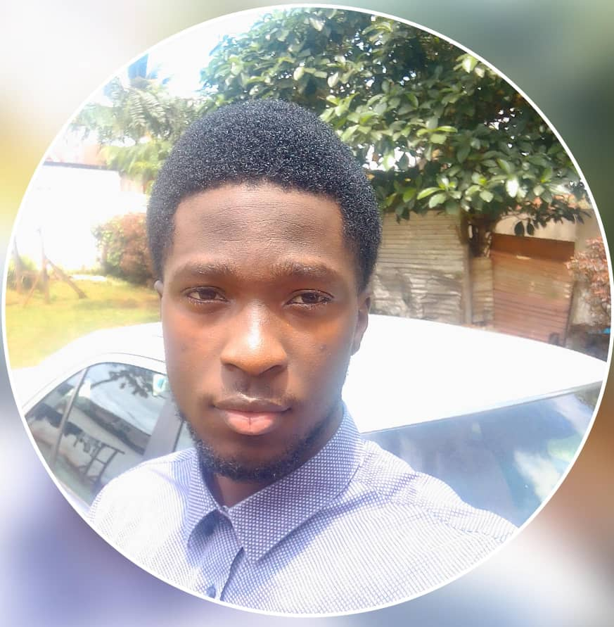

ANDOH ESSIMBI JEAN FRANCOIS
Née le 18 Octobre 2005 (19 ans) à Yaoundé, je suis passionné par le développement web, l'intelligence artificielle,
la robotique, le réseau, l'administration système...etc en gros tout ce qui conserne l'informatique.
Actuellement, je poursuis mes études à l'université de Yaoundé I, en filière informatique, en Licence I.
Pour l'instant, j'ai suivi deux formations dans la startup PROPENTA TECHSAVING SOLUTION en:
- Programmation : dans les languages de programmation suivants: (Python, C++, JavaScript, Language C);
- Développement web: (Html, CSS, JavaScript);
- Programmation Django: Développement des applications web.
du savoir, des compétences, afin de devenir un grand informaticien dans l'avenir.
Compétences:
Languages de programmation:
- C 65%
- Python 35%
- C++ 40%
- JavaScript 35%
Développement web
- HTML 75%
- CSS 65%
- JavaScript 65%
- Django 35%
Me contacter:
- Phone: +237 698 735 802
- Email: andohjeanfrancois7@gmail.com
- Adresse institutionnelle:
francois.andoh@facsciences-uy1.cm
ANDOH ESSIMBI JEAN FRANCOIS
Born on October 18, 2005 (19 years old) in Yaoundé, i am passionate about web development, artificial intelligence,
robotics, networking, système administration...etc Basically everything related to computers.
Currently, i am continuing my studies at the university of yaounde I, in the computer science stream, in the first year of my degree.
So far, i have completed two training courses at the startup PROPENTA TECHSAVING SOLUTION en:
- Programming : in the following languages: (Python, C++, JavaScript, Language C);
- web development: (Html, CSS, JavaScript);
- Django Programming: in web application development.
knowledge and skills in order to become a great computer scientist in the future.
Skills:
Programming languages:
- C 65%
- Python 35%
- C++ 40%
- JavaScript 35%
Web development
- HTML 75%
- CSS 65%
- JavaScript 65%
- Django 35%
Contact me:
- Phone: +237 698 735 802
- Email: andohjeanfrancois7@gmail.com
- Institutional address:
francois.andoh@facsciences-uy1.cm